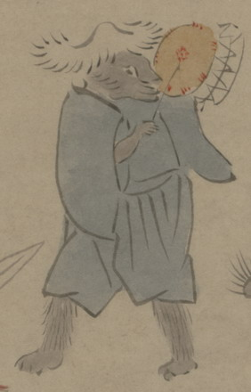

締太鼓を叩く化物。全身が黒い毛皮で覆われており、獣の変化と考えられる。笠をかぶり、青い衣を着て、左肩に締太鼓を担ぎ、右手のバチで叩いている。
出典：親書誌：U426_nichibunken_0150：付喪神絵詞；ツクモガミエコトバ／日付：2010／資源識別子：U426_nichibunken_0150_0064_0000
Copyright (c)2010- International Research Center for Japanese Studies, Kyoto, Japan. All rights reserved.